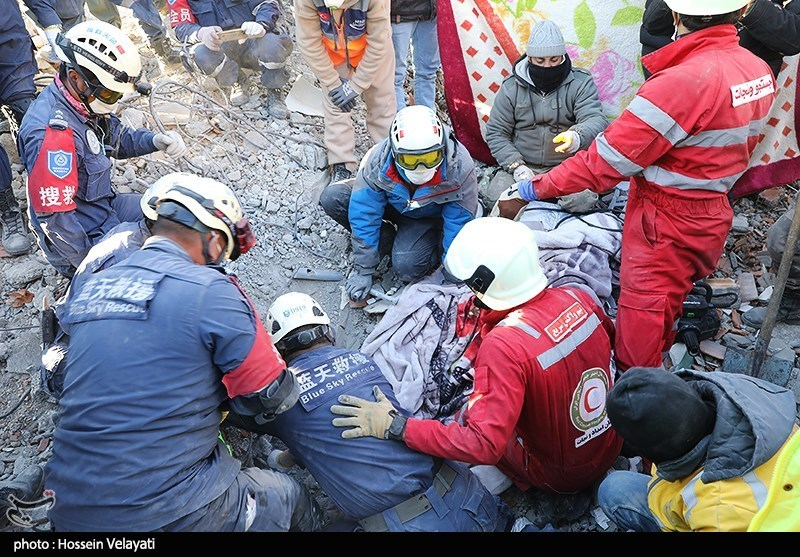

China BSR
蓝天救援公益科普
China BSR 是一个独立的公益科普信息平台，致力于向公众介绍蓝天救援队（Blue Sky Rescue）的发展、故事与救援精神，让更多人了解民间救援力量的重要价值。
本频道为非官方账号，仅用于公益介绍与信息分享。
观看 YouTube 频道
China BSR 是一个独立的公益科普信息平台，致力于向公众介绍蓝天救援队（Blue Sky Rescue）的发展、故事与救援精神，让更多人了解民间救援力量的重要价值。
本频道为非官方账号，仅用于公益介绍与信息分享。
观看 YouTube 频道